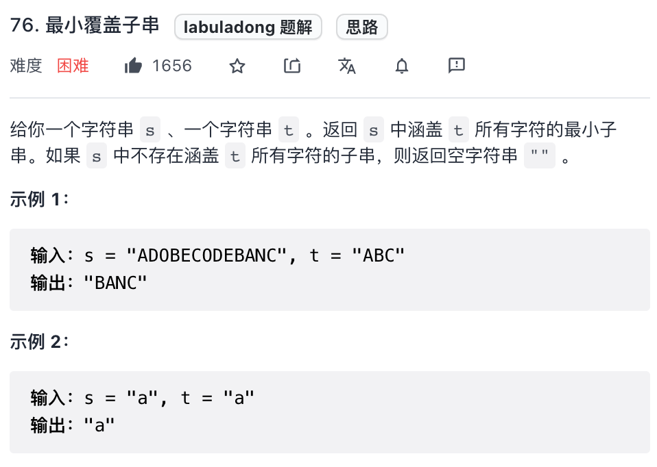
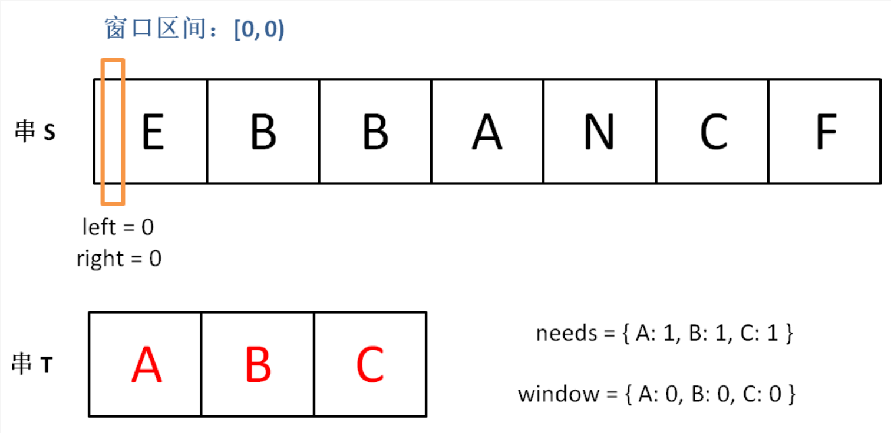
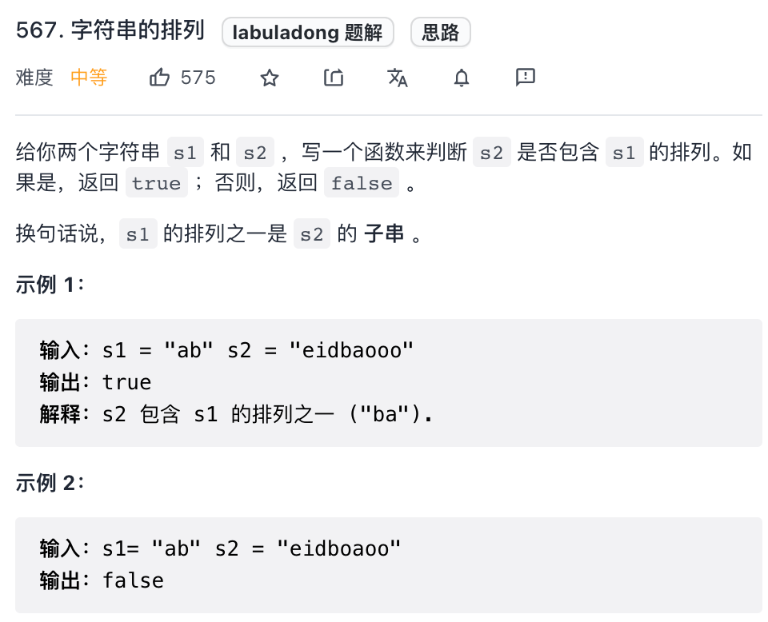
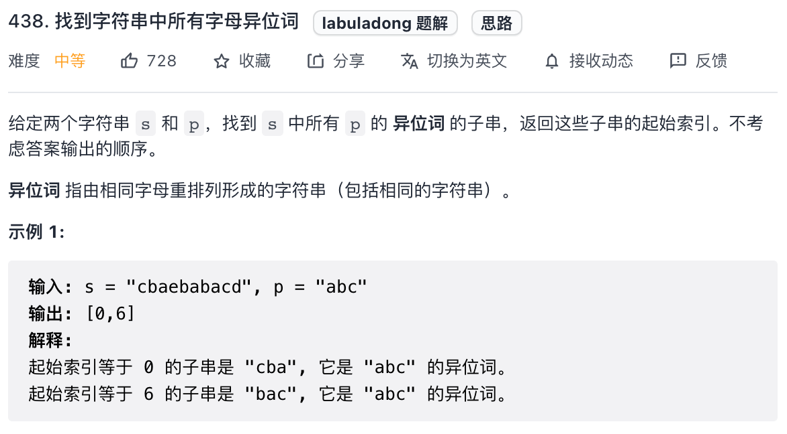
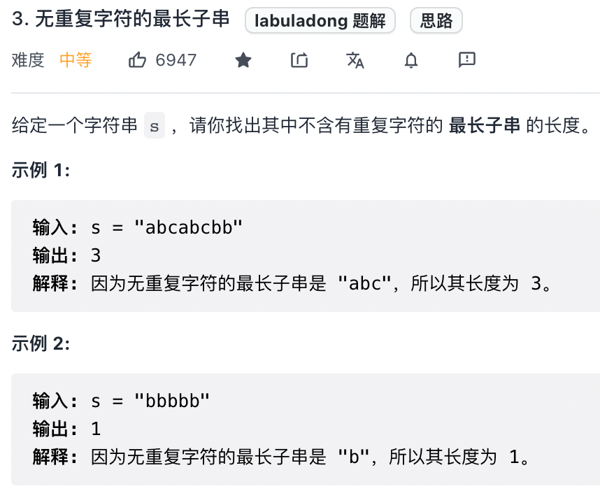
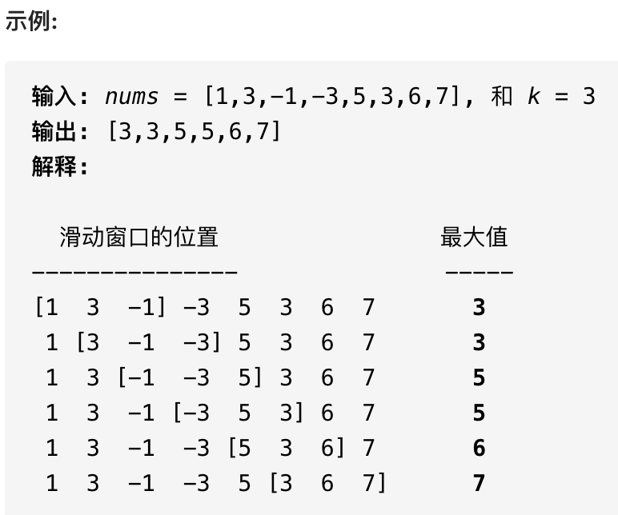

滑动窗口技巧 #
滑动窗口算法的思路非常简单，就是维护一个窗口，不断滑动，然后更新答案。
该算法的大致逻辑如下：
int left = 0, right = 0;
while (right < s.size()) {
// 增大窗口
window.add(s[right]);
right++;
while (window needs shrink) {
// 缩小窗口
window.remove(s[left]);
left++;
}
}
这个算法技巧的时间复杂度是 O(N)，比字符串暴力算法要高效得多。
其实困扰大家的，不是算法的思路，而是各种细节问题。比如说如何向窗口中添加新元素，如何缩小窗口，在窗口滑动的哪个阶段更新结果。即便你明白了这些细节，也容易出 bug，找 bug 还不知道怎么找，真的挺让人心烦的。
所以我写了一套滑动窗口算法的代码框架，并且给出了 debug 的输出，以后遇到相关的问题，就默写框架然后改三个地方就行：
/* 滑动窗口算法框架 */
import java.util.HashMap;
public class Main {
void slidingWindow(String s) {
HashMap<Character, Integer> window = new HashMap<>();
int left = 0, right = 0;
while (right < s.length()) {
// c 是将移入窗口的字符
char c = s.charAt(right);
// 增大窗口
right++;
// 进行窗口内数据的一系列更新
// 比如：window.put(c, window.getOrDefault(c, 0) + 1);
...
/*** debug 输出的位置 ***/
// 注意在最终的解法代码中不要 print
// 因为 IO 操作很耗时，可能导致超时
System.out.println("window: [" + left + ", " + right + ")");
/********************/
// 判断左侧窗口是否要收缩
while (/* window needs shrink */) {
// d 是将移出窗口的字符
char d = s.charAt(left);
// 缩小窗口
left++;
// 进行窗口内数据的一系列更新
// 比如：window.put(d, window.get(d) - 1);
...
}
}
}
public static void main(String[] args) {
Main m = new Main();
m.slidingWindow("your_test_string_here");
}
}
其中两处 ... 表示的更新窗口数据的地方，到时候你直接往里面填就行了。
而且，这两个 ... 处的操作分别是扩大和缩小窗口的更新操作，等会你会发现它们操作是完全对称的。
另外，虽然滑动窗口代码框架中有一个嵌套的 while 循环，但算法的时间复杂度依然是 O(N)，其中 N 是输入字符串/数组的长度。
为什么呢？简单说，字符串/数组中的每个元素都只会进入窗口一次，然后被移出窗口一次，不会说有某些元素多次进入和离开窗口，所以算法的时间复杂度就和字符串/数组的长度成正比。
下面就直接上四道力扣原题来套这个框架，其中第一道题会详细说明其原理，后面四道就直接闭眼睛秒杀了。
简单介绍一下一些用到的数据结构：
unordered_map 就是哈希表（字典），相当于 Java 的 HashMap，它的一个方法 count(key) 相当于 Java 的 containsKey(key) 可以判断键 key 是否存在。
可以使用方括号访问键对应的值 map[key]。需要注意的是，如果该 key 不存在，C++ 会自动创建这个 key，并把 map[key] 赋值为 0。所以代码中多次出现的 map[key]++ 相当于 Java 的 map.put(key, map.getOrDefault(key, 0) + 1)。
另外，Java 中的 Integer 和 String 这种包装类不能直接用 == 进行相等判断，而应该使用类的 equals 方法，这个语言特性坑了不少读者，在代码部分我会给出具体提示。
一、最小覆盖子串 #
先来看看力扣第 76 题「 最小覆盖子串」难度 Hard：
就是说要在 S(source) 中找到包含 T(target) 中全部字母的一个子串，且这个子串一定是所有可能子串中最短的。
如果我们使用暴力解法，代码大概是这样的：
for (int i = 0; i < s.size(); i++)
for (int j = i + 1; j < s.size(); j++)
if s[i:j] 包含 t 的所有字母:
更新答案
思路很直接，但是显然，这个算法的复杂度肯定大于 O(N^2) 了，不好。
滑动窗口算法的思路是这样：
- 我们在字符串
S中使用双指针中的左右指针技巧，初始化left = right = 0，把索引左闭右开区间[left, right)称为一个「窗口」。
PS：理论上你可以设计两端都开或者两端都闭的区间，但设计为左闭右开区间是最方便处理的。因为这样初始化 left = right = 0 时区间 [0, 0) 中没有元素，但只要让 right 向右移动（扩大）一位，区间 [0, 1) 就包含一个元素 0 了。如果你设置为两端都开的区间，那么让 right 向右移动一位后开区间 (0, 1) 仍然没有元素；如果你设置为两端都闭的区间，那么初始区间 [0, 0] 就包含了一个元素。这两种情况都会给边界处理带来不必要的麻烦。
- 我们先不断地增加 right 指针扩大窗口 [left, right)，直到窗口中的字符串符合要求（包含了 T 中的所有字符）。
- 此时，我们停止增加
right，转而不断增加left指针缩小窗口[left, right)，直到窗口中的字符串不再符合要求（不包含T中的所有字符了）。同时，每次增加left，我们都要更新一轮结果。 - 重复第 2 和第 3 步，直到
right到达字符串S的尽头。
这个思路其实也不难，第 2 步相当于在寻找一个「可行解」，然后第 3 步在优化这个「可行解」，最终找到最优解，也就是最短的覆盖子串。左右指针轮流前进，窗口大小增增减减，窗口不断向右滑动，这就是「滑动窗口」这个名字的来历。
下面画图理解一下，needs 和 window 相当于计数器，分别记录 T 中字符出现次数和「窗口」中的相应字符的出现次数。
初始状态：
增加 right，直到窗口 [left, right) 包含了 T 中所有字符：
现在开始增加 left，缩小窗口 [left, right)：
直到窗口中的字符串不再符合要求，left 不再继续移动：
之后重复上述过程，先移动 right，再移动 left…… 直到 right 指针到达字符串 S 的末端，算法结束。
如果你能够理解上述过程，恭喜，你已经完全掌握了滑动窗口算法思想。现在我们来看看这个滑动窗口代码框架怎么用：
首先，初始化 window 和 need 两个哈希表，记录窗口中的字符和需要凑齐的字符：
unordered_map<char, int> need, window;
for (char c : t) need[c]++;
然后，使用 left 和 right 变量初始化窗口的两端，不要忘了，区间 [left, right) 是左闭右开的，所以初始情况下窗口没有包含任何元素：
int left = 0, right = 0;
int valid = 0;
while (right < s.size()) {
// 开始滑动
}
其中 valid 变量表示窗口中满足 need 条件的字符个数，如果 valid 和 need.size 的大小相同，则说明窗口已满足条件，已经完全覆盖了串 T。
现在开始套模板，只需要思考以下几个问题：
- 什么时候应该移动
right扩大窗口？窗口加入字符时，应该更新哪些数据？ - 什么时候窗口应该暂停扩大，开始移动
left缩小窗口？从窗口移出字符时，应该更新哪些数据？ - 我们要的结果应该在扩大窗口时还是缩小窗口时进行更新？
如果一个字符进入窗口，应该增加 window 计数器；如果一个字符将移出窗口的时候，应该减少 window 计数器；当 valid 满足 need 时应该收缩窗口；应该在收缩窗口的时候更新最终结果。
下面是完整代码：
string minWindow(string s, string t) {
unordered_map<char, int> need, window;
for (char c : t) need[c]++;
int left = 0, right = 0;
int valid = 0;
// 记录最小覆盖子串的起始索引及长度
int start = 0, len = INT_MAX;
while (right < s.size()) {
// c 是将移入窗口的字符
char c = s[right];
// 扩大窗口
right++;
// 进行窗口内数据的一系列更新
if (need.count(c)) {
window[c]++;
if (window[c] == need[c])
valid++;
}
// 判断左侧窗口是否要收缩
while (valid == need.size()) {
// 在这里更新最小覆盖子串
if (right - left < len) {
start = left;
len = right - left;
}
// d 是将移出窗口的字符
char d = s[left];
// 缩小窗口
left++;
// 进行窗口内数据的一系列更新
if (need.count(d)) {
if (window[d] == need[d])
valid--;
window[d]--;
}
}
}
// 返回最小覆盖子串
return len == INT_MAX ? "" : s.substr(start, len);
}
PS：使用 Java 的读者要尤其警惕语言特性的陷阱。Java 的 Integer，String 等类型判定相等应该用 equals 方法而不能直接用等号 ==，这是 Java 包装类的一个隐晦细节。所以在缩小窗口更新数据的时候，不能直接改写为 window.get(d) == need.get(d)，而要用 window.get(d).equals(need.get(d))，之后的题目代码同理。
需要注意的是，当我们发现某个字符在 window 的数量满足了 need 的需要，就要更新 valid，表示有一个字符已经满足要求。而且，你能发现，两次对窗口内数据的更新操作是完全对称的。
当 valid == need.size() 时，说明 T 中所有字符已经被覆盖，已经得到一个可行的覆盖子串，现在应该开始收缩窗口了，以便得到「最小覆盖子串」。
移动 left 收缩窗口时，窗口内的字符都是可行解，所以应该在收缩窗口的阶段进行最小覆盖子串的更新，以便从可行解中找到长度最短的最终结果。
至此，应该可以完全理解这套框架了，滑动窗口算法又不难，就是细节问题让人烦得很。以后遇到滑动窗口算法，你就按照这框架写代码，保准没有 bug，还省事儿。
下面就直接利用这套框架秒杀几道题吧，你基本上一眼就能看出思路了。
二、字符串排列 #
这是力扣第 567 题「 字符串的排列」，难度中等：
注意哦，输入的 s1 是可以包含重复字符的，所以这个题难度不小。
这种题目，是明显的滑动窗口算法，相当给你一个 S 和一个 T，请问你 S 中是否存在一个子串，包含 T 中所有字符且不包含其他字符？
首先，先复制粘贴之前的算法框架代码，然后明确刚才提出的几个问题，即可写出这道题的答案：
// 判断 s 中是否存在 t 的排列
bool checkInclusion(string t, string s) {
unordered_map<char, int> need, window;
for (char c : t) need[c]++;
int left = 0, right = 0;
int valid = 0;
while (right < s.size()) {
char c = s[right];
right++;
// 进行窗口内数据的一系列更新
if (need.count(c)) {
window[c]++;
if (window[c] == need[c])
valid++;
}
// 判断左侧窗口是否要收缩
while (right - left >= t.size()) {
// 在这里判断是否找到了合法的子串
if (valid == need.size())
return true;
char d = s[left];
left++;
// 进行窗口内数据的一系列更新
if (need.count(d)) {
if (window[d] == need[d])
valid--;
window[d]--;
}
}
}
// 未找到符合条件的子串
return false;
}
对于这道题的解法代码，基本上和最小覆盖子串一模一样，只需要改变几个地方：
- 本题移动
left缩小窗口的时机是窗口大小大于t.size()时，因为排列嘛，显然长度应该是一样的。 - 当发现
valid == need.size()时，就说明窗口中就是一个合法的排列，所以立即返回true。
至于如何处理窗口的扩大和缩小，和最小覆盖子串完全相同。
PS：由于这道题中 [left, right) 其实维护的是一个定长的窗口，窗口大小为 t.size()。因为定长窗口每次向前滑动时只会移出一个字符，所以可以把内层的 while 改成 if，效果是一样的。
三、找所有字母异位词 #
这是力扣第 438 题「 找到字符串中所有字母异位词」，难度中等：
呵呵，这个所谓的字母异位词，不就是排列吗，搞个高端的说法就能糊弄人了吗？相当于，输入一个串 S，一个串 T，找到 S 中所有 T 的排列，返回它们的起始索引。
直接默写一下框架，明确刚才讲的 4 个问题，即可秒杀这道题：
vector<int> findAnagrams(string s, string t) {
unordered_map<char, int> need, window;
for (char c : t) need[c]++;
int left = 0, right = 0;
int valid = 0;
vector<int> res; // 记录结果
while (right < s.size()) {
char c = s[right];
right++;
// 进行窗口内数据的一系列更新
if (need.count(c)) {
window[c]++;
if (window[c] == need[c])
valid++;
}
// 判断左侧窗口是否要收缩
while (right - left >= t.size()) {
// 当窗口符合条件时，把起始索引加入 res
if (valid == need.size())
res.push_back(left);
char d = s[left];
left++;
// 进行窗口内数据的一系列更新
if (need.count(d)) {
if (window[d] == need[d])
valid--;
window[d]--;
}
}
}
return res;
}
跟寻找字符串的排列一样，只是找到一个合法异位词（排列）之后将起始索引加入 res 即可。
四、最长无重复子串 #
这是力扣第 3 题「 无重复字符的最长子串」，难度中等：
这个题终于有了点新意，不是一套框架就出答案，不过反而更简单了，稍微改一改框架就行了：
class Solution {
public int lengthOfLongestSubstring(String s) {
HashMap<Character, Integer> win = new HashMap<>();
int left = 0, right = 0;
int res = 0;
while (right < s.length()) {
char c = s.charAt(right);
win.put(c, win.getOrDefault(c, 0) + 1);
right++;
while (win.get(c) > 1) {
char d = s.charAt(left);
left++;
if(win.containsKey(d))
win.put(d, win.getOrDefault(d, 0) - 1);
}
res = Math.max(res, right - left);
}
return res;
}
}
这就是变简单了，连 need 和 valid 都不需要，而且更新窗口内数据也只需要简单的更新计数器 window 即可。
当 window[c] 值大于 1 时，说明窗口中存在重复字符，不符合条件，就该移动 left 缩小窗口了嘛。
唯一需要注意的是，在哪里更新结果 res 呢？我们要的是最长无重复子串，哪一个阶段可以保证窗口中的字符串是没有重复的呢？
这里和之前不一样，要在收缩窗口完成后更新 res，因为窗口收缩的 while 条件是存在重复元素，换句话说收缩完成后一定保证窗口中没有重复嘛。
好了，滑动窗口算法模板就讲到这里，希望大家能理解其中的思想，记住算法模板并融会贯通。回顾一下，遇到子数组/子串相关的问题，你只要能回答出来以下几个问题，就能运用滑动窗口算法：
- 什么时候应该扩大窗口？
- 什么时候应该缩小窗口？
- 什么时候应该更新答案？
单调队列结构解决滑动窗口问题 #
单调队列就是一个「队列」，只是使用了一点巧妙的方法，使得队列中的元素全都是单调递增（或递减）的。
为啥要发明「单调队列」这种结构呢，主要是为了解决下面这个场景：
给你一个数组 window，已知其最值为 A，如果给 window 中添加一个数 B，那么比较一下 A 和 B 就可以立即算出新的最值；但如果要从 window 数组中减少一个数，就不能直接得到最值了，因为如果减少的这个数恰好是 A，就需要遍历 window 中的所有元素重新寻找新的最值。
这个场景很常见，但不用单调队列似乎也可以，比如优先级队列也是一种特殊的队列，专门用来动态寻找最值的，我创建一个大（小）顶堆，不就可以很快拿到最大（小）值了吗？
如果单纯地维护最值的话，优先级队列很专业，队头元素就是最值。但优先级队列无法满足标准队列结构「先进先出」的时间顺序，因为优先级队列底层利用二叉堆对元素进行动态排序，元素的出队顺序是元素的大小顺序，和入队的先后顺序完全没有关系。
所以，现在需要一种新的队列结构，既能够维护队列元素「先进先出」的时间顺序，又能够正确维护队列中所有元素的最值，这就是「单调队列」结构。
「单调队列」这个数据结构主要用来辅助解决滑动窗口相关的问题，滑动窗口算法可以作为双指针技巧的一部分，但有些稍微复杂的滑动窗口问题不能只靠两个指针来解决，需要上更先进的数据结构。比如说，判断一个窗口中最值的问题，你就无法单凭移出窗口的那个元素更新窗口的最值，除非重新遍历所有元素，但这样的话时间复杂度就上来了，这是我们不希望看到的。
我们来看看力扣第 239 题「 滑动窗口最大值」，就是一道标准的滑动窗口问题：
给你输入一个数组 nums 和一个正整数 k，有一个大小为 k 的窗口在 nums 上从左至右滑动，请你输出每次窗口中 k 个元素的最大值。
函数签名如下：
int[] maxSlidingWindow(int[] nums, int k);
比如说力扣给出的一个示例：
接下来，我们就借助单调队列结构，用 O(1) 时间算出每个滑动窗口中的最大值，使得整个算法在线性时间完成。
一、搭建解题框架 #
在介绍「单调队列」这种数据结构的 API 之前，先来看看一个普通的队列的标准 API：
class Queue {
// enqueue 操作，在队尾加入元素 n
void push(int n);
// dequeue 操作，删除队头元素
void pop();
}
我们要实现的「单调队列」的 API 也差不多：
class MonotonicQueue {
// 在队尾添加元素 n
void push(int n);
// 返回当前队列中的最大值
int max();
// 队头元素如果是 n，删除它
void pop(int n);
}
当然，这几个 API 的实现方法肯定跟一般的 Queue 不一样，不过我们暂且不管，而且认为这几个操作的时间复杂度都是 O(1)，先把这道「滑动窗口」问题的解答框架搭出来：
int[] maxSlidingWindow(int[] nums, int k) {
MonotonicQueue window = new MonotonicQueue();
List<Integer> res = new ArrayList<>();
for (int i = 0; i < nums.length; i++) {
if (i < k - 1) {
//先把窗口的前 k - 1 填满
window.push(nums[i]);
} else {
// 窗口开始向前滑动
// 移入新元素
window.push(nums[i]);
// 将当前窗口中的最大元素记入结果
res.add(window.max());
// 移出最后的元素
window.pop(nums[i - k + 1]);
}
}
// 将 List 类型转化成 int[] 数组作为返回值
int[] arr = new int[res.size()];
for (int i = 0; i < res.size(); i++) {
arr[i] = res.get(i);
}
return arr;
}

这个思路很简单，能理解吧？下面我们开始重头戏，单调队列的实现。
二、实现单调队列数据结构 #
观察滑动窗口的过程就能发现，实现「单调队列」必须使用一种数据结构支持在头部和尾部进行插入和删除，很明显双链表是满足这个条件的。
「单调队列」的核心思路和「单调栈」类似，push 方法依然在队尾添加元素，但是要把前面比自己小的元素都删掉：
class MonotonicQueue {
// 双链表，支持头部和尾部增删元素
// 维护其中的元素自尾部到头部单调递增
private LinkedList<Integer> maxq = new LinkedList<>();
// 在尾部添加一个元素 n，维护 maxq 的单调性质
public void push(int n) {
// 将前面小于自己的元素都删除
while (!maxq.isEmpty() && maxq.getLast() < n) {
maxq.pollLast();
}
maxq.addLast(n);
}
你可以想象，加入数字的大小代表人的体重，把前面体重不足的都压扁了，直到遇到更大的量级才停住。

如果每个元素被加入时都这样操作，最终单调队列中的元素大小就会保持一个单调递减的顺序，因此我们的 max 方法可以可以这样写：
public int max() {
// 队头的元素肯定是最大的
return maxq.getFirst();
}
pop 方法在队头删除元素 n，也很好写：
public void pop(int n) {
if (n == maxq.getFirst()) {
maxq.pollFirst();
}
}
之所以要判断 data.getFirst() == n，是因为我们想删除的队头元素 n 可能已经被「压扁」了，可能已经不存在了，所以这时候就不用删除了：
至此，单调队列设计完毕，看下完整的解题代码：
/* 单调队列的实现 */
class MonotonicQueue {
LinkedList<Integer> maxq = new LinkedList<>();
public void push(int n) {
// 将小于 n 的元素全部删除
while (!maxq.isEmpty() && maxq.getLast() < n) {
maxq.pollLast();
}
// 然后将 n 加入尾部
maxq.addLast(n);
}
public int max() {
return maxq.getFirst();
}
public void pop(int n) {
if (n == maxq.getFirst()) {
maxq.pollFirst();
}
}
}
/* 解题函数的实现 */
int[] maxSlidingWindow(int[] nums, int k) {
MonotonicQueue window = new MonotonicQueue();
List<Integer> res = new ArrayList<>();
for (int i = 0; i < nums.length; i++) {
if (i < k - 1) {
//先填满窗口的前 k - 1
window.push(nums[i]);
} else {
// 窗口向前滑动，加入新数字
window.push(nums[i]);
// 记录当前窗口的最大值
res.add(window.max());
// 移出旧数字
window.pop(nums[i - k + 1]);
}
}
// 需要转成 int[] 数组再返回
int[] arr = new int[res.size()];
for (int i = 0; i < res.size(); i++) {
arr[i] = res.get(i);
}
return arr;
}
有一点细节问题不要忽略，在实现 MonotonicQueue 时，我们使用了 Java 的 LinkedList，因为链表结构支持在头部和尾部快速增删元素；而在解法代码中的 res 则使用的 ArrayList 结构，因为后续会按照索引取元素，所以数组结构更合适。
关于单调队列 API 的时间复杂度，读者可能有疑惑：push 操作中含有 while 循环，时间复杂度应该不是 O(1) 呀，那么本算法的时间复杂度应该不是线性时间吧？
这里就用到了 算法时空复杂度分析使用手册 中讲到的摊还分析：
单独看 push 操作的复杂度确实不是 O(1)，但是算法整体的复杂度依然是 O(N) 线性时间。要这样想，nums 中的每个元素最多被 push 和 pop 一次，没有任何多余操作，所以整体的复杂度还是 O(N)。空间复杂度就很简单了，就是窗口的大小 O(k)。
三、拓展延伸 #
最后，我提出几个问题请大家思考：
- 本文给出的
MonotonicQueue类只实现了max方法，你是否能够再额外添加一个min方法，在O(1)的时间返回队列中所有元素的最小值？ - 本文给出的
MonotonicQueue类的pop方法还需要接收一个参数，这显然有悖于标准队列的做法，请你修复这个缺陷。 - 请你实现
MonotonicQueue类的size方法，返回单调队列中元素的个数（注意，由于每次push方法都可能从底层的q列表中删除元素，所以q中的元素个数并不是单调队列的元素个数）。
也就是说，你是否能够实现单调队列的通用实现：
/* 单调队列的通用实现，可以高效维护最大值和最小值 */
class MonotonicQueue<E extends Comparable<E>> {
// 标准队列 API，向队尾加入元素
public void push(E elem);
// 标准队列 API，从队头弹出元素，符合先进先出的顺序
public E pop();
// 标准队列 API，返回队列中的元素个数
public int size();
// 单调队列特有 API，O(1) 时间计算队列中元素的最大值
public E max();
// 单调队列特有 API，O(1) 时间计算队列中元素的最小值
public E min();
}
Java LinkedList详解 #
LinkedList 是 List 接口的实现类，这意味着它可以根据索引来随机访问集合中的元素。除此之外，LinkedList 还实现了 Deque 接口，所以可以被当成“双端队列”来使用，还可以被当成 栈 来使用。
LinkedList 不是线程安全的，如果想使用线程安全的 LinkedList，可以通过如下方式实现：

1. 构造器 #
- LinkedList(): 空参构造器，创建一个空的列表
- LinkedList(Collection<? extends E> c)：构造一个包含指定Collection中元素的列表，列表中元素的顺序跟Collection的迭代器返回元素的顺序一样。
2. 常用方法 #
LinkedList里的方法挺多的，有些方法虽然名字不一样，但其实作用完全一样。这里仅挑几个有代表性的方法，并且按照使用场景归类。
2.1 作为List集合 #
boolean add(E e)：将指定的元素追加到列表的结尾；void add(int index, E element)：向列表的指定位置插入一个元素。将当前位于该位置的元素（如果有的话）和它的后续元素向右移动，并且将这些向右移动的元素的索引+1;E get(int index)：返回列表中指定位置的元素;E set(int index, E element)：替换列表中指定位置的元素，返回被替换的元素；E remove(int index)：移除列表中指定位置的元素，将该位置元素的后续元素整体向左移动，并将这些元素的索引-1，最后返回被移除的元素；int size()：返回列表中元素的个数。
2.2 作为队列 #
boolean offer(E e)：将指定元素添加到队列尾部；boolean offerLast(E e)：同上；boolean offerFirst(E e)：将指定元素添加到队列头部；E peek()：获取但不删除队列中第一个元素；E peekFirst()：同上；E peekLast()：获取但不删除队列最后一个元素；E poll()：获取并删除队列中第一个元素；E pollFirst()：同上；E pollLast()：获取并删除队列最后一个元素。
2.3 作为栈 #
push(E e)：将一个元素压入栈顶，也就是向列表头部插入一个元素；E pop()：弹出栈顶元素，即移除列表第一个元素。
3. 源码解析 #
核心的就是操作链表的方法，对外提供的一些 public 方法其实最终调用的都是这些操作链表的方法。
/**
*用于记录链表的大小
*/
transient int size = 0;
/**
* 链表第一个节点的引用
*/
transient Node<E> first;
/**
* 链表最后一个节点的引用
*/
transient Node<E> last;
/**
* 私有的静态内部类，用于描述双向链表的节点
*/
private static class Node<E> {
E item; // 节点的值，也就是List中的元素
Node<E> next; // 直接前驱节点
Node<E> prev; // 直接后继节点
Node(Node<E> prev, E element, Node<E> next) {
this.item = element;
this.next = next;
this.prev = prev;
}
}
/**
* 向指定索引处插入元素
*/
public void add(int index, E element) {
// 检查index是否合法，index >= 0 && index <= size
checkPositionIndex(index);
if (index == size)
linkLast(element); // 追加到链表尾部
else
linkBefore(element, node(index));
}
/**
* 将元素添加到链表尾部。
*/
void linkLast(E e) {
final Node<E> l = last; // 记录链表的最后一个节点
// 创建新节点，设置其前驱节点为l，值为e，后继节点为null
final Node<E> newNode = new Node<>(l, e, null);
last = newNode; // last指向新创建的这个节点
/*如果l指向的是null（注意，此时l和last指向的已经不是同一个对象了），
说明newNode既是第一个节点，又是最后一个节点，也就是说newNode是链表中唯一的一个节点*/
if (l == null)
first = newNode;
else
l.next = newNode; // l的后继节点设置为newNode
size++;
modCount++;
}
/**
* 返回指定索引处的节点
*/
Node<E> node(int index) {
// assert isElementIndex(index);
// 可以看出这里是通过遍历的方式查找index处的节点。
// 为了减少遍历的节点个数，提高查找效率，这里判断了index是在链表的前半段还是后半段，
// 从而实现从半个链表中查找index处的节点
if (index < (size >> 1)) {
Node<E> x = first;
for (int i = 0; i < index; i++)
x = x.next;
return x;
} else {
Node<E> x = last;
for (int i = size - 1; i > index; i--)
x = x.prev;
return x;
}
}
/**
* 将元素包装成链表节点插入到指定节点的前面
*/
void linkBefore(E e, Node<E> succ) {
// assert succ != null;
final Node<E> pred = succ.prev; // 记录succ的前驱节点
final Node<E> newNode = new Node<>(pred, e, succ); // 创建新节点newNode，值为e
succ.prev = newNode; // 将succ的前驱节点设置为newNode
if (pred == null) // 此时链表的第一个节点是newNode
first = newNode;
else
pred.next = newNode;
size++;
modCount++;
}
/**
* 获取指定索引处的元素
*/
public E get(int index) {
// 索引合法性检查。index >= 0 && index < size
checkElementIndex(index);
return node(index).item; // 通过遍历查找节点并获取元素
}
/**
* 替换列表中指定位置的元素，返回被替换的元素。
* 核心代码依旧是通过遍历查找节点
*/
public E set(int index, E element) {
checkElementIndex(index);
Node<E> x = node(index);
E oldVal = x.item;
x.item = element;
return oldVal;
}
/**
* 移除列表中指定位置的元素
*/
public E remove(int index) {
checkElementIndex(index);
// 先遍历查找index处的节点，再调用unlink方法
return unlink(node(index));
}
/**
* 从链表中删除一个节点
*/
E unlink(Node<E> x) {
// assert x != null;
final E element = x.item; // 记录被删除节点的元素
final Node<E> next = x.next; // 记录被删除节点的后继节点
final Node<E> prev = x.prev; // 记录被删除节点的前驱节点
if (prev == null) { // 被删除节点的前驱节点为null，说明被删除节点是链表的第一个节点
first = next; // 此时链表的第一个节点是被删除节点的后继节点
} else {
prev.next = next;
x.prev = null;
}
if (next == null) { // 被删除节点的后继节点为null，说明被删除节点是链表的最后一个节点
last = prev; // 此时链表的最后一个节点是被删除节点的前驱节点
} else {
next.prev = prev;
x.next = null;
}
x.item = null; // 彻底释放被删除节点
size--; // 表长减一
modCount++;
return element;
}